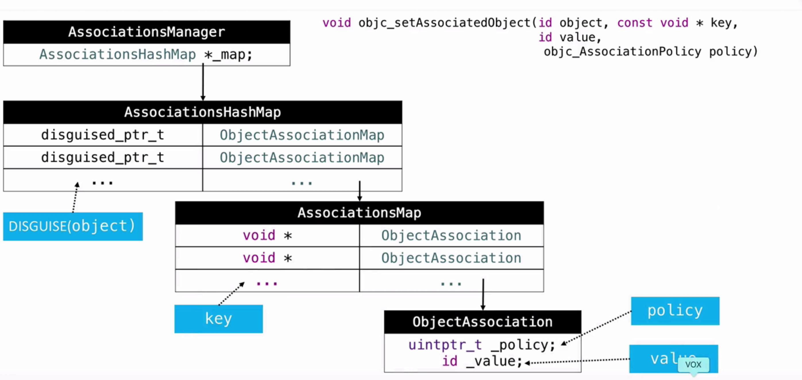

Category数据结构
struct category_t {
const char *name;
classref_t cls;
struct method_list_t *instanceMethods;
struct method_list_t *classMethods;
struct protocol_list_t *protocols;
struct property_list_t *instanceProperties;
// Fields below this point are not always present on disk.
struct property_list_t *_classProperties;
...
};
在objc-runtime-new.h中可以找到分类底层数据结构的定义。从数据结构上可以清楚的看到分类能干什么，不能干什么。它能存储实例方法、类方法、协议和属性，但没有对应的存储ivars的成员变量，故分类中不能添加成员变量。
Category的加载过程
Category和Extensiton很类似，两者的区别在于，Extensition在编译期就直接和原类编译在一起，Category是在运行时动态添加到原类中的。
应用程序启动流程如下:
- 应用程序启动后，系统读取可执行文件(Mach-O文件),从里面获取dyld的路径并加载dyld;
- runtime向dyld注册回调函数;
- 由dyld加载依赖库,生成对应的image对象，对这些image进行链接,并在image改变后调用回调函数;
- runtime接收dyld的函数回调，执行map_images、load_images等操作;
- 调用main()函数
在编译阶段，每个Category文件都是独立的，为category_t结构。在程序启动后的map_images阶段，会遍历category_t的二维数组，把所有独立的Category中对应的方法合并到对应的类和元类中。合并过程如下:
- 遍历某个类的所有分类，取出分类中的方法列表、属性列表等，合并成addedLists。并且最后参与编译的分类，最先加入;
- 原先的methodlists中的方法列表根据addedLists数量进行内存扩容;
- methodslists位置往后挪到addedListsCount个位置，前面的位置由addedLists填充，合并完毕;
需要注意的是第3步的挪动操作，因为方法查找是从前往后找的，找到即结束。这样的设计让分类中的方法总是比原类中的方法优先调用，也就是表现为分类中的同名方法会覆盖类中的原方法，但其实原方法还是在methodlist中的。
load和initialize方法
load方法调用在load_images阶段，main函数之前。load方法是拿到函数地址直接调用的，并没有走objc_msgSend方法，因此不会像分类一样存在方法覆盖的问题。此外，会优先调用类的load方法，并保证父类优先调用，之后调用分类的load方法，调用顺序为编译时的顺序。
initialize在类第一次接收到消息时调用。在lookup函数查找方法时，会判断是否需要初始化，如果需要，通过objcMsgSend调用initialize方法。由于走的是消息机制，会被分类覆盖。
关联对象
前文说过，动态添加成员变量会破坏已有的内存布局。在实际项目中，我们往往通过关联对象技术实现分类添加成员变量的效果。
在objc-references.mm文件中，我们可以看到关联对象的底层数据结构。
class AssociationsManager {
// associative references: object pointer -> PtrPtrHashMap.
static AssociationsHashMap *_map;
};
class AssociationsHashMap : public unordered_map<disguised_ptr_t, ObjectAssociationMap *, DisguisedPointerHash, DisguisedPointerEqual, AssociationsHashMapAllocator> {
};
class ObjectAssociationMap : public std::map<void *, ObjcAssociation, ObjectPointerLess, ObjectAssociationMapAllocator> {
};
class ObjcAssociation {
uintptr_t _policy;
id _value;
};

当我们使用objc_setAssociatedObject设置关联对象时，究竟发现了什么呢？
- 所有的关联对象都被被存在一个全局的hashMap中，由AssociationManager进行管理。hashMap的key是实例对象的内存地址，value是一个ObjectAssociationMap对象，保存了与这个实例对象关联的信息。
- ObjectAssociationMap的key是关联时指定的属性的key，即传入的第二个参数。value是ObjcAssociation对象，存储关联时指定的value和policy.
可以看到，虽然数据结构构建的有些复杂，但在这种设计下，可以通过实例对象的内存地址和关联属性名作为key，高效的存储和查找。